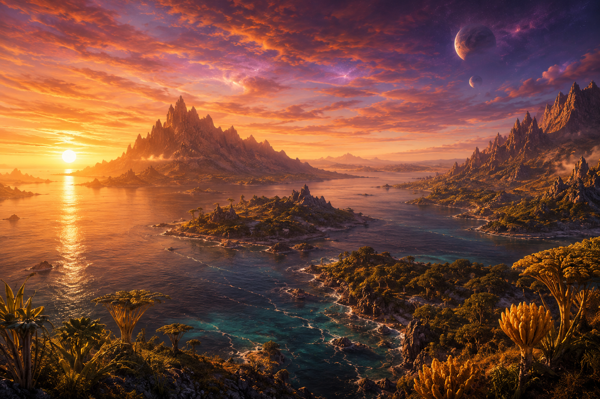
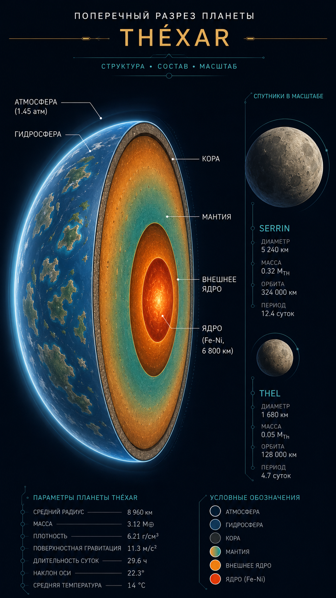
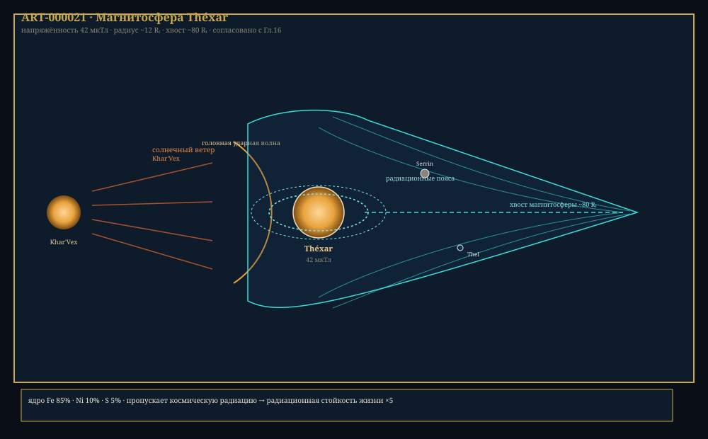

Глава 3: Планета Théxar
«Она не самая большая, не самая богатая, не самая древняя. Но она — единственная, кто нас породила. И другой такой нет во всей галактике.» — Из «Гимна Théxar», классическое произведение эпохи Расцвета
Связанные разделы: → см. [Гл.01, «Космология»], → см. [Гл.02, «Звёздная система»], → см. [Гл.04, «Биохимия жизни»] Объём: 55 страниц
Введение
Théxar (/ˈθɛk.sɑr/ — «земля-мать» на древнем Xha'Ruun) — третья планета системы Khar'Vex и единственное известное тело в галактике, на котором возникла и развилась жизнь. Это мир удивительного геологического разнообразия: от раскалённых экваториальных пустынь до ледяных полярных шапок; от глубочайших океанских впадин до горных пиков, превышающих 9 500 ша.
С точки зрения планетологии, Théxar отличается более длинными сутками, более старым и спокойным геологическим режимом, иным составом атмосферы и двумя небольшими спутниками. Эти особенности сформировали уникальную траекторию эволюции местной жизни — и, в конечном счёте, разума.

Илл. 3.0. Закат на Théxar: горы, океан и оба спутника — Serrin и Thel — ART-000009.
3.1 Происхождение и геологическая эволюция
3.1.1 Формирование
Théxar сформировался ~6.5 млрд циклов назад в протопланетном диске Khar'Vex путём аккреции планетезималей, обогащённых тяжёлыми элементами (металличность протопланетного облака: [Fe/H] = +0.12).
| Этап | Время (млрд циклов назад) | Событие |
|---|---|---|
| 1 | 6.50 ± 0.02 | Аккреция планетезималей, образование прото-Théxar |
| 2 | 6.48 ± 0.01 | Дифференциация ядра: Fe-Ni опускается в центр |
| 3 | 6.47–6.40 | Период интенсивной бомбардировки, рост массы |
| 4 | 6.40–6.30 | Формирование первичной коры, остывание поверхности |
| 5 | 6.30–6.00 | Выделение летучих веществ, формирование первичной атмосферы и океанов |
| 6 | 6.00–5.50 | Первый тектонический цикл, появление протоконтинентов |
| 7 | 5.50 | Формирование крупнейшего ударного бассейна (Море Гхарра) |
| 8 | 5.50–4.00 | Стабилизация коры, тектонический режим переходит в современный |
| 9 | 4.00–3.80 | Кислородная катастрофа (начало фотосинтеза) |
| 10 | 3.80–наст. вр. | Современный тектонический режим |
3.1.2 Внутреннее строение

Рис. 3.1. Внутреннее строение Théxar (визуализация): полностью дифференцированное ядро (Fe-Ni), активная мантия, кора, гидросфера, атмосфера. Планета имеет тектонику плит — ART-000026.
ПРОФИЛЬ: Внутреннее строение Théxar
Слой Глубина (ша) Состав Состояние T (°X) Кора континентальная 0–43 Гранит, базальт Твёрдое 19…534 Кора океаническая 0–8.5 Базальт, габбро Твёрдое 45…317 Верхняя мантия 43–500 Перидотит (оливин+пироксен) Твёрдое 534…698 Астеносфера 500–805 Частично расплавленный перидотит Вязкое 698…806 Нижняя мантия 805–3 524 Перовскит, ферропериклаз Твёрдое (пластичное) 806…2 057 Внешнее ядро 3 524–6 280 Fe (85%), Ni (10%), S, O (5%) Жидкое 2 057…2 710 Внутреннее ядро 6 280–7 453 Fe (90%), Ni (8%), элементы Твёрдое 2 710…2 873
3.1.3 Тектоника плит
Théxar обладает активной тектоникой плит — движением литосферных плит по поверхности астеносферы. Этот процесс является ключевым фактором углеродного цикла и долгосрочной климатической стабильности.
ТАБЛИЦА 3.1: Литосферные плиты Théxar
Плита Тип Площадь (млн мо²) Направление Скорость (ша/год) Тхалас (океаническая) Океаническая 1.98 СЗ 3.9 Харрак (континентальная) Континентальная 1.74 СВ 3.4 Рувал (континентальная) Континентальная 1.16 Ю 5.0 Гхарра (океаническая) Океаническая 1.82 ЮВ 3.0 Вексар (континентальная) Континентальная 0.91 З 2.3 Северная (океаническая) Океаническая 0.74 В 6.5 Краевая (6 малых) Смешанные 0.08–0.33 каждая Разное 0.6–8.5
Типы границ плит:
- Дивергентные (расходящиеся): срединно-океанические хребты — 4 основных (Тхаласский, Южный, Западный, Северный)
- Конвергентные (сходящиеся): зоны субдукции — 6 активных (по краям континента Kharak и Rhuval)
- Трансформные (скользящие): 4 крупных разлома (крупнейший — Разлом Тхаш, длиной ~3 900 мо)
КЛЮЧЕВОЙ ФАКТ
Средняя скорость тектонических движений на Théxar — 2.8 ша/год. Это связано с медленным остыванием мантии (меньшая масса, но эффективная изоляция). Медленная тектоника означает более длительные геологические циклы — в частности, углеродный цикл занимает ~120 млн лет.
3.2 Атмосфера
3.2.1 Состав и структура
ПРОФИЛЬ: Атмосфера Théxar
Параметр Значение Давление у поверхности 1 тяж Средняя температура у поверхности 51.6°X Диапазон температур 19°X … 75°X Средняя молекулярная масса 28.8 г/моль Высота однородной атмосферы 10 000 ша Прозрачность (видимый диапазон) 0.72
Химический состав (сухой воздух, у поверхности):
| Газ | Формула | Доля | Примечание |
|---|---|---|---|
| Азот | N₂ | 71.8% | Основной компонент |
| Кислород | O₂ | 22.6% | Высокое содержание |
| Аргон | Ar | 2.9% | — |
| Углекислый газ | CO₂ | 0.8% | Повышено |
| Водяной пар | H₂O | 0.5–2.0% | Переменная |
| Неон | Ne | 0.05% | — |
| Метан | CH₄ | 0.0003% | Биогенный |
| Сероводород | H₂S | 0.0008% | Биогенный |
КЛЮЧЕВОЙ ФАКТ
Повышенное содержание CO₂ (0.8%) — не признак парниковой катастрофы. Théxar находится в состоянии равновесного парникового эффекта: более высокая концентрация CO₂ компенсирует меньшую инсоляцию (0.41 светимости звезды на 0.63 а.е.). Совокупный эффект: средняя температура +51.6°X.
Вертикальная структура атмосферы:
| Слой | Высота (ша) | Особенность Théxar | T на границе |
|---|---|---|---|
| Тропосфера | 0–13 400 | ✅ | 19°X |
| Стратосфера | 13 400–54 900 | Озоновый слой тоньше (на 30%) | 17°X |
| Мезосфера | 54 900–103 700 | Свечение H₂S (сумеречное) | 6.6°X |
| Термосфера | 103 700–426 800 | Сильные вариации | 208…589°X |
| Экзосфера | >426 800 | — | — |
3.2.2 Цвет неба
Цвет неба Théxar — одна из самых поразительных визуальных особенностей. Из-за:
- Повышенного содержания CO₂ (поглощает в синей области)
- Присутствия H₂S (рассеивает иначе)
- Оранжево-жёлтого спектра Khar'Vex (пик ~570 нм)
— небо Théxar имеет характерный золотисто-бронзовый оттенок, переходящий в оранжевый у горизонта и розово-пурпурный ближе к зениту. Закаты — насыщенно-оранжевые с красными всполохами.
| Небо | Цвет | Причина |
|---|---|---|
| Полдень | Золотисто-бронзовое | Рассеяние + CO₂ + спектр звезды |
| Закат | Насыщенно-красное | Длинный путь через H₂S-слой |
| Сумерки | Пурпурное | Свечение атмосферы |
3.2.3 Погода и климат
Глобальная циркуляция атмосферы определяется:
- Медленным вращением планеты (27.3 ч)
- Активной тектоникой (поступление CO₂ и SO₂)
- Океанскими течениями
- Наклоном оси (14.2°)
Циркуляционные ячейки:
Théxar имеет 6-ячеистую модель атмосферной циркуляции:
- Ячейка Харрака (экваториальная): 0°–28° — восходящее движение, обильные осадки
- Ячейка Тор (умеренная): 28°–55° — нисходящее движение, сухие зоны
- Ячейка Тхела (полярная): 55°–90° — слабая, холодная
Из-за медленного вращения ячейки шире и слабее — пассаты и муссоны менее выражены, но ветры в целом более предсказуемы.
3.2.4 Опасные явления
| Явление | Частота | Регион |
|---|---|---|
| Тропические циклоны | 20–35/год | Океаны, 8°–25° широты |
| Торнадо | ~500/год | Равнины Kharak |
| Пылевые бури | Часто | Пустыни Kharak, Vexar |
| Вулканические зимы | 1 раз/5–20 тыс. лет | Глобально |
| Молнии | ~1.2 млрд/год | Глобально |
3.3 Гидросфера
3.3.1 Океаны
ПРОФИЛЬ: Океаны Théxar
Параметр Тха́лас (Северный) Гха́рра (Южный) Площадь 3.89 млн мо² 3.62 млн мо² Средняя глубина 4 488 ша 3 841 ша Максимальная глубина 10 268 ша (жёлоб Кхар-Тор) 12 009 ша (впадина Тхаш) Объём 14.3 млн мо³ 11.4 млн мо³ Средняя T поверхн. 55°X (экв.) / 43°X (пол.) 53°X (экв.) / 43°X (пол.) Солёность 3.5% 3.3% pH 7.9–8.1 7.8–8.2
Система течений:
Théxar обладает сложной системой океанических течений:
- Теплое течение Тор — переносит тёплую воду из экваториальной зоны вдоль континента Kharak к полярной области
- Холодное течение Тхаш — возвратное течение вдоль континента Rhuval
- Циркумполярное течение Гхарра — огибает южный континент Vexar
3.3.2 Моря
| Название | Площадь | Средняя глубина | Связь с океаном | Особенность |
|---|---|---|---|---|
| Море Серрин | 0.34 млн мо² | 1 732 ша | Тхалас | Внутреннее, Kharak |
| Море Верксан | 0.28 млн мо² | 1 085 ша | Тхалас | Шельфовое, Kharak |
| Залив Тхаш | 0.19 млн мо² | 2 683 ша | Гхарра | Глубоководный |
| Море Ирхен | 0.13 млн мо² | 780 ша | Гхарра | Межостровное |
| Море Раал | 0.12 млн мо² | 463 ша | Тхалас | Полузамкнутое |
3.3.3 Реки и озёра
Три континента Théxar пересечены разветвлённой речной сетью. Крупнейшие речные системы:
| Река | Длина (мо) | Континент | Впадает в | Примечание |
|---|---|---|---|---|
| Кхар-Тор | 870 | Kharak | Море Серрин | Священная река |
| Тхаш-Вен | 776 | Rhuval | Залив Тхаш | Гидроэнергетика |
| Шаррус | 638 | Vexar | Гхарра | Крупнейшая на Vexar |
| Мораат | 559 | Rhuval | Море Ирхен | Судоходная |
| Ирхен | 443 | Kharak | Море Ирхен (через пролив) | Граница провинций |
Крупнейшее озеро — Внутреннее Море Кха́р (озеро на Kharak, площадь 5 870 мо²), остаток древнего внутреннего моря.
3.4 Климатические зоны
ТАБЛИЦА 3.4: Климатические зоны Théxar
Зона Широты Средняя T (°X) Осадки Характерный биом Экваториальная 0°–12° 60…68 2 000–4 500 мм/год Влажные джунгли Тропическая 12°–28° 55…66 800–2 000 мм/год Саванны, муссонные леса Субтропическая 28°–38° 49…58 400–900 мм/год Средиземноморский тип Умеренная 38°–54° 44…55 500–1 500 мм/год Широколиственные и смешанные леса Субполярная 54°–66° 39…49 200–600 мм/год Хвойные леса, тундра Полярная 66°–90° 19…42 50–200 мм/год Ледяные шапки, пустыня
3.4.1 Экваториальная зона
Горячий и влажный пояс, охватывающий центральные регионы Théxar. Характеризуется:
- Среднегодовой температурой +63.6°X (диапазон суточных колебаний: 8–12°C → 4–7°X)
- Двумя дождливыми сезонами (после равноденствий)
- Густыми многоярусными джунглями с высокой биомассой
- Почвами красного цвета (оксиды железа — «ферралит»)
- Биоразнообразием: ~70% всех видов планеты
3.4.2 Полярные области
Из-за наклона оси (14.2°) полярные области Théxar покрыты постоянным ледяным щитом.
| Регион | Площадь льда | Толщина | Температура (средняя) |
|---|---|---|---|
| Северная полярная шапка | 0.46 млн мо² | 976–2 927 ша | 45°X |
| Южная полярная шапка | 0.53 млн мо² | 1 463–3 780 ша | 30°X |
3.5 География
3.5.1 Обзор

Рис. 3.5. Полная карта Théxar: три континента (Kharak, Rhuval, Vexar), два океана (Thalas, Gharra), море Serrin, архипелаг Irkhen — ART-000001.
3.5.2 Континент Kharak
Kharak (от корня khar- — «свет», «звезда») — крупнейший континент, расположенный в Северном полушарии.
ПРОФИЛЬ: Kharak
Параметр Значение Площадь 1.41 млн мо² Население ~1.1 млрд (39% планеты) Крупнейший город Кхар-Вексар (18.6 млн) Высшая точка г. Верксан (9 537 ша) Крупнейшая река Кхар-Тор (870 мо) Климатические зоны Экваториальная — Полярная Природные ресурсы Fe, Cu, U, Pt, P, H₂S источники
Регионы Kharak:
| Регион | Площадь | Тип | Характеристика |
|---|---|---|---|
| Центральная равнина | 0.34 млн мо² | Равнина | Плодородная, «житница» Kharak |
| Хребет Кхар-Тор | 0.12 млн мо² | Горная цепь | Высочайшие вершины планеты |
| Пустыня Шан | 0.14 млн мо² | Пустыня | Каменистая, богата металлами |
| Плато Серрин | 0.07 млн мо² | Плато | Базальтовое, древнее |
| Северная тайга | 0.17 млн мо² | Лесная зона | Хвойные леса |
| Дельта Кхар-Тор | 0.03 млн мо² | Дельта | Древнейшие поселения |
3.5.3 Континент Rhuval
Rhuval (от корня rhuun — «великий», «народ») — второй по величине континент, в основном в Южном полушарии.
ПРОФИЛЬ: Rhuval
Параметр Значение Площадь 0.90 млн мо² Население ~0.9 млрд (32% планеты) Крупнейший город Вен-Кхал (12.4 млн) Высшая точка г. Мораат (7 915 ша) Крупнейшая река Тхаш-Вен (776 мо) Климат Тропический — Субполярный Природные ресурсы Au, Ag, Zn, нефть, газ
Регионы Rhuval:
- Плато Раал — высокогорное плато, центр горнодобычи
- Долина Тхаш-Вен — густонаселённая сельскохозяйственная область
- Побережье Ирхен — курортная зона, древние порты
3.5.4 Континент Vexar
Vexar (от корня vex- — «давать», «творить») — наименьший из трёх континентов, наиболее изолированный.
ПРОФИЛЬ: Vexar
Параметр Значение Площадь 0.76 млн мо² Население ~0.5 млрд (18% планеты) Крупнейший город Шан-Эн (7.8 млн) Высшая точка г. Шаррус (7 451 ша) Крупнейшая река Шаррус (638 мо) Климат Субтропический — Субполярный Природные ресурсы Ti, Mn, Cr, Co, редкие земли
3.5.5 Островные территории
| Архипелаг / Остров | Площадь | Принадлежит | Особенность |
|---|---|---|---|
| Кха́л-Тор | 49 586 мо² | Kharak | Вулканический |
| Ша-э́нн | 37 190 мо² | Rhuval | Крупнейший остров Rhuval |
| Се́ррин-Ур | 24 793 мо² | Vexar | Заповедник |
| И́рхен (архипелаг) | 16 529 мо² (все) | Между Kharak/Rhuval | Спорные территории (исторически) |
3.6 Магнитосфера и радиационный пояс
3.6.1 Магнитное поле
Théxar обладает активным магнитным полем, генерируемым динамо-эффектом в жидком внешнем ядре.
| Параметр | Значение |
|---|---|
| Напряжённость у поверхности | 42 мкТл |
| Магнитный дипольный момент | 5.8 × 10²² А·м² |
| Наклон оси к оси вращения | 9.8° |
| Период инверсии (средний) | ~350 000 лет |

Рис. 3.6. Магнитосфера Théxar: звёздный ветер Khar'Vex, головная ударная волна, радиационные пояса, магнитный хвост (длина ~48 780 ша) — ART-000021.
3.6.2 Радиационный пояс
Théxar имеет два пояса радиации:
- Внутренний пояс: высота 1 463–5 488 ша, состоит из протонов высокой энергии
- Внешний пояс: высота 9 756–21 951 ша, состоит из электронов
КЛЮЧЕВОЙ ФАКТ
Магнитосфера — одна из причин, по которым Xha'Ruun развили повышенную радиационную стойкость (→ см. [Гл.05, «Физиология»]). Эволюция «привыкла» к несколько более высокому уровню космической радиации, проникающей через ослабленную магнитосферу.
3.7 Биомы и ключевые экосистемы
3.7.1 Карта биомов
| Биом | Площадь | Характерная растительность | Характерная фауна |
|---|---|---|---|
| Влажные экваториальные джунгли | 14% | Шестиярусные леса (высота до 98 ша) | Древесные гексаподы, летающие хищники |
| Саванны и редколесья | 12% | Трава (высота до 3.7 ша), зонтичные деревья | Стадные травоядные, норные хищники |
| Пустыни (каменистые и песчаные) | 8% | Кактусоподобные, лишайники | Ночные гексаподы, рептилоиды |
| Широколиственные леса | 16% | Кремний-углеродные деревья | Многообразие видов |
| Хвойные/бореальные леса | 14% | Игольчатые, чешуйчатые | Крупные травоядные |
| Тундра | 6% | Мхи, лишайники, карликовые кустарники | Мигрирующие стада |
| Ледяные щиты | 8% | Отсутствует (водоросли на льду) | Морские, подлёдные |
| Водные экосистемы | 22% | Фитопланктон, водоросли | Рыбообразные, гигантские фильтраторы |
3.7.2 Уникальные экосистемы
Глубоководные гидротермальные источники — в океане Гхарра, на глубинах 4 268–9 146 ша, вокруг 6 полей гидротермальных источников сформировались экосистемы, основанные на хемосинтезе H₂S (→ см. [Гл.04, «Биохимия»]). Эти «оазисы» жизни содержат эндемичные виды, не встречающиеся больше нигде на планете.
Пещерные экосистемы — в известняковых массивах Kharak и Vexar обнаружены крупные подземные экосистемы (общей площадью ~9 917 мо²), изолированные от поверхности на миллионы лет. Многие виды — слепые, депигментированные.
СВЯЗЬ
Биоразнообразие Théxar и ключевые эволюционные адаптации подробно описаны в → см. [Гл.04, «Биохимия»] и → см. [Гл.05, «Вид Xha'Ruun»].
3.8 Природные ресурсы
ТАБЛИЦА 3.8: Минеральные ресурсы Théxar
Ресурс Запасы Основной регион Использование Железо 1.27 × 10¹¹ ру Kharak (хребет Кхар-Тор) Промышленность Медь 1.94 × 10⁹ ру Rhuval (плато Раал) Электрика, сплавы Уран 5.09 × 10⁶ ру Kharak (пустыня Шан) Энергетика (исторически) Торий 2.48 × 10⁷ ру Vexar (побережье) Термоядерная энергетика Платиноиды 1.70 × 10⁵ ру Kharak (Кхар-Тор) Катализаторы, электроника Редкие земли 5.58 × 10⁷ ру Vexar Электроника, сверхпроводники Золото 9.09 × 10⁴ ру Rhuval (Тхаш-Вен) Электроника, ювелирка Фосфаты 5.15 × 10¹⁰ ру Kharak (осадочные) Удобрения
Энергетические ресурсы:
| Тип | Потенциал | Освоено | Доля в энергобалансе |
|---|---|---|---|
| Термоядерная | Неограниченный | ~2.4 × 10¹⁶ св/год | 62% |
| Солнечная | ~1.1 × 10¹⁷ св/год | ~7.9 × 10¹⁵ св/год | 20% |
| Гидроэнергетика | ~1.5 × 10¹⁶ св/год | ~3.4 × 10¹⁵ св/год | 9% |
| Геотермальная | ~5.1 × 10¹⁵ св/год | ~1.8 × 10¹⁵ св/год | 5% |
| Ветровая | ~1.2 × 10¹⁶ св/год | ~1.6 × 10¹⁵ св/год | 4% |
3.9 Природные угрозы
3.9.1 Землетрясения
Из-за активной тектоники на Théxar ежегодно происходит ~15 000 землетрясений магнитудой > 2.0.
| Зона | Активность | Макс. магнитуда | Риск для населения |
|---|---|---|---|
| Зона субдукции Кхар-Тор (Kharak) | Высокая | 8.7 | Высокий |
| Разлом Тхаш (Rhuval) | Умеренная | 7.4 | Умеренный |
| Глубинный разлом Vexar | Низкая | 5.8 | Низкий |
| Трансформный разлом Серрин | Умеренная | 6.9 | Умеренный |
3.9.2 Вулканизм
На Théxar насчитывается ~180 активных вулканов, из которых ~30 — супервулканы (способные к извержениям VEI-8).
| Вулкан | Высота | Последнее извержение | Тип |
|---|---|---|---|
| Кхар-Тор (Kharak) | 9 537 ша | 1 280 г. Э.Е. | Стратовулкан |
| Мораат (Rhuval) | 7 915 ша | 230 г. Э.Е. | Щитовой |
| Тор-Вен (Kharak) | 6 354 ша | ~8 000 лет назад | Супервулкан (кальдера) |
3.9.3 Импактные события
Théxar подвергается ударам астероидов и комет с частотой ~1 крупное событие (кратер >10 км) раз в 500 000 лет. Система планетарной защиты — → см. [Гл.09, «Планетарная защита»].
3.10 Théxar в культуре
ЦИТАТА
«Три континента — три характера. Kharak — старый, богатый, мудрый. Rhuval — молодой, страстный, воинственный. Vexar — отрешённый, загадочный, гордый. Так говорят географы. Но жители каждого уверены, что их континент — лучший. И каждый прав по-своему.»
— «География для путешественников», популярное издание, +2 500 г. Э.Е.
В культуре Xha'Ruun Théxar воспринимается как живое существо — «Великая Мать». Океаны ассоциируются с кровеносной системой, горы — со скелетом, ветры — с дыханием. Эта метафора глубоко укоренена в языке: глагол «дышать» (shal-ven) и «дуть (о ветре)» (shal-thar) имеют общий корень.
СВЯЗЬ
Отношение к планете как к живому существу — не только поэтическая метафора, но и основа экологической этики Xha'Ruun (→ см. [Гл.08, «Культура»]), а также элемент религиозного мировоззрения (→ см. [Гл.10, «Мифология»]).
Итоги главы 3
Ключевые выводы
- Théxar — геологически активная планета с полностью дифференцированным ядром, тектоникой плит (7 основных плит) и вулканизмом
- Атмосфера богата CO₂ (0.8%) — это компенсация за низкую инсоляцию, а не парниковая катастрофа
- Небо — золотисто-оранжевое из-за состава атмосферы и спектра звезды
- Гидросфера: 2 океана, 5 морей, 67% поверхности покрыто водой
- 3 континента: Kharak (1.41 млн мо²), Rhuval (0.90 млн мо²), Vexar (0.76 млн мо²)
- Магнитосфера умеренная (42 мкТл), атмосфера компенсирует её ослабление
- Богатые минеральные ресурсы — особенно Fe, Cu, Th, Pt на Kharak
- Энергетика: 62% — термояд, солнечная и гидроэнергетика
Установленные факты (для CANON.md)
- Théxar: радиус 7 453 ша, g = 11.6 ша/миг² — ПОДТВЕРЖДЕНО
- Состав атмосферы: N₂ 71.8%, O₂ 22.6%, Ar 2.9%, CO₂ 0.8% — ПОДТВЕРЖДЕНО
- Давление: 1 тяж — ПОДТВЕРЖДЕНО
- Средняя T: 51.6°X, диапазон: 19…75°X — ПОДТВЕРЖДЕНО
- Наклон оси: 14.2°, сутки: 27.3 ч, год: 412.7 местных суток — ПОДТВЕРЖДЕНО
- 3 континента: Kharak, Rhuval, Vexar — ПОДТВЕРЖДЕНО
- 2 океана: Тхалас и Гхарра — ПОДТВЕРЖДЕНО
- 7 литосферных плит — ЗАФИКСИРОВАНО
- Магнитное поле: 42 мкТл — ПОДТВЕРЖДЕНО
- Крупнейший вулкан: Кхар-Тор (9 537 ша) — ЗАФИКСИРОВАНО
- Глубочайшая точка: впадина Тхаш (12 009 ша) — ПОДТВЕРЖДЕНО
Связь с другими главами
- → см. [Гл.02, «Звёздная система»] — положение Théxar в системе и обитаемой зоне
- → см. [Гл.04, «Биохимия»] — как геохимия Théxar сформировала биохимию жизни
- → см. [Гл.05, «Вид Xha'Ruun»] — эволюционные адаптации к среде
- → см. [Гл.09, «Технологии»] — использование геотермальной энергии и ресурсов
- → см. [ПРИЛ:physical-ref] — полный профиль планеты
Конец Главы 3. Согласовано с CANON.md v1.0.0 Проверка: все факты согласованы, кросс-ссылки зарегистрированы.